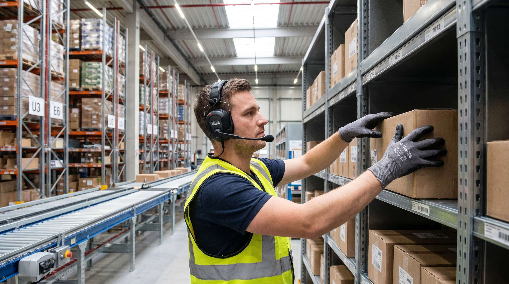

Forestil dig at plukke 200 ordrelinjer om dagen uden nogensinde at kigge på en skaerm, en liste eller en scanner. Medarbejderen haerer instruksen i et headset, gaer direkte til lokationen, bekraefter med en stemmekode og får næste instruks. Ingen haendler på tastatur, ingen skaerm der skal vendes mod lyset, ingen liste der tabes på gulvet.
Det er voice picking. Det er ikke nyt, men det er stadig et af de mest undervurderede værktøjer i dansk lagerdrift. Og det er heller ikke for alle. Det er dyrt at implementere, tidskrævende at indkøre og det kræver stabilt personale for at give det forventede afkast.
Her er en aerligh gennemgang af, hvad stemmestyring faktisk giver, hvem der bruger det og hvornår det ikke kan betale sig.
👉 Vil du vide, om SmartPack kan integrere med dit voice picking system? Tag en snak med os her
SÃ¥dan virker stemmestyring teknisk
Et voice picking system bestaer af tre dele: et headset med mikrofon, en lille computer (typisk båret på kroppen), og software der kommunikerer med WMS-systemet.
Systemet konverterer WMS-instrukser til tale og sender dem via headsettet. Medarbejderen bekraefter sine handlinger med korte stemmekoder, der verificerer lokations-ID, antal enheder og ordrenummer. Systemet registrerer bekraeeftelsen og sender næste instruks.
De fleste systemer brugere talemaendkendelse, der traenes på den individuelle medarbejders stemme over 30-60 minutters opsætning. Det gør systemet robust overfor støj og accenter. Godt traeningede profiler er afgørendepå lagrene med høj baggrundsstøj.
Hvem bruger det i praksis
Voice picking er mest udbredt inden for:
- Dagligvarer og fedevarer: Store lagrene med kolde eller froesne omgivelser, hvor skabmaerme er upraktiske og haandskemaer krae et pluk uden skaerm.
- Medicinal og farma: Præcision er kritisk. Voice picking reducerer fejlraten markant på ordrer med mange lobenumre.
- E-handel med høj volumen: Lagre der plukker 500+ ordrelinjer dagligt per medarbejder og har et struktureret lokationssystem.
- Stykgods og industrivaregross: Mange linier, mange lokationer, komplekse ordrer.
Det er mindre udbredt på mindre e-handelslager med under 100-200 ordrer om dagen. Her er investeringen ikke proportional med gevinsten.
Hvad voice picking faktisk leverer
Tallene varierer, men et realistisk billede baseret på publicerede leverandoerdata og brancheundersøgelserviser:
- Produktivitet: Typisk 10-25% højere plukhastighed sammenlignet med papirbaserede systemer. Sammenligner man med skaermbaserede systemer er gevinsten lavere, typisk 5-15%.
- Fejlrate: Fald på 20-35% i plukfejl. Stemmestyring tvinger medarbejderen til aktiv bekraeeftelse af lokation og antal, som reducerer glemsels- og forlaengingsfejl.
- Onboarding: Nye medarbejdere når fuld produktivitet hurtigere, fordi de ikke skal lære et skaermsystem at kende. Taleinststruktionen er intuitiv.
- Skader: Faerre nakkeskader og overbelastningsproblemer, fordi medarbejderen ikke behøver at kigge ned på en skaerm eller liste under gang.
Det lyder imponerende. Og det er det også. Men der er bagsider.
Ulemperne du skal kende til
Voice picking er ikke en magisk knaep. Her er de reelle udfordringer:
- Implementeringsomkostning: Et komplet voice picking system koster typisk 50.000-200.000 kr. afhaeengigt af antal brugere, leverandoer og integration til WMS. Det er ikke en impulskøbet.
- Afhængighed af WMS-integration: Systemet er kun saa godt som de data det får. Et rodet WMS med forkerte lokationsdata giver det forkerte instrukser. Voice picking forstorer fejl i grunddata, det fjerner dem ikke.
- Stoemningsændringer: Medarbejdere, der er vant til skaermbaseret arbejde, kan opleve voice picking som alienerende. Implementer gradvist og involver medarbejderne i processen.
- Støj på lageret: Meget højt støjniveau kan forstyrre stemmegenoendkendelsen. Tjaek leverandoerens specifikationer mod dit lagers dB-niveau.
- Hardware-vedligehold: Headsets og baarbare enheder går i stykker. Du skal have en strategi for reserveudstyr og reparation.
Hvornår giver det mening at investere
En simpel beregning: tag din nuværende plukfejlrate og multipliker med de gennemsnitlige omkostninger pr. fejl (returnering, genpakning, kundeservice). Laeg produktivitetsgevinsten oven i som sparede minutters pakketid. Hvis ROI-beregningen viser tilbagebetaling inden for 18-24 maaneder, er det vaerd at overveje seeroest.
Voice picking giver mening, når du har:
- Mindst 200-300 ordrelinjer pr. medarbejder pr. dag.
- Et struktureret lokationssystem (lokationskoder der virker).
- Stabilt personale som kan traene og vedligeholde stemmeprofiler.
- Et WMS der kan integrere med voice-middleware.
Er du ikke der endnu, er en investering i bedre skaermbaseret WMS og godt lokationssystem sandsynligvis et bedre første skridt.